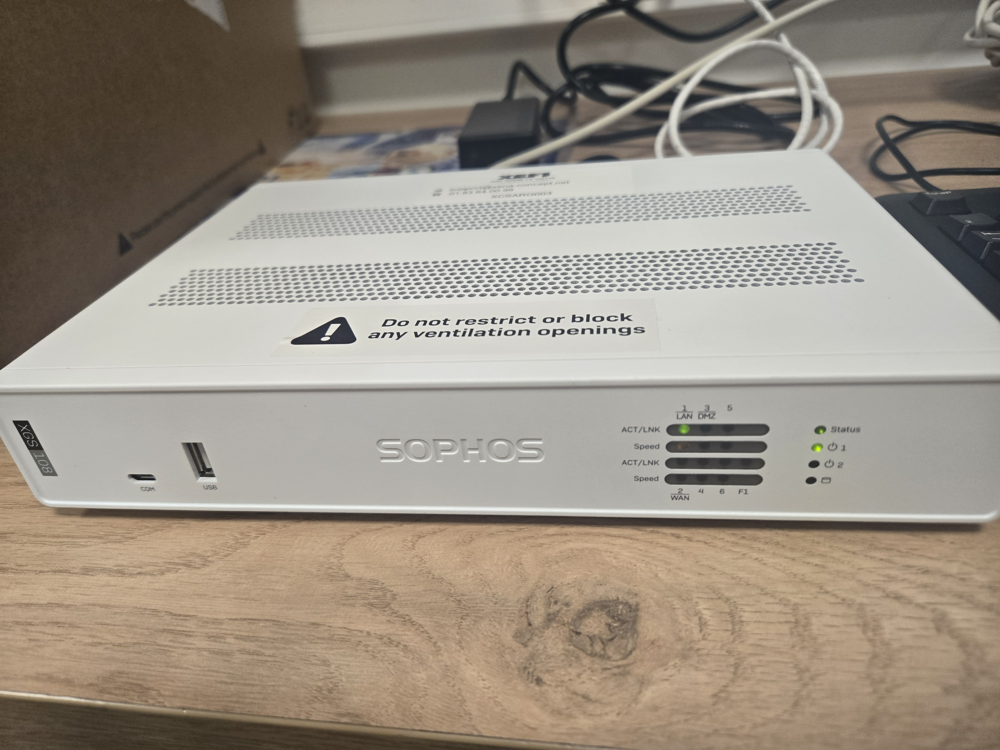
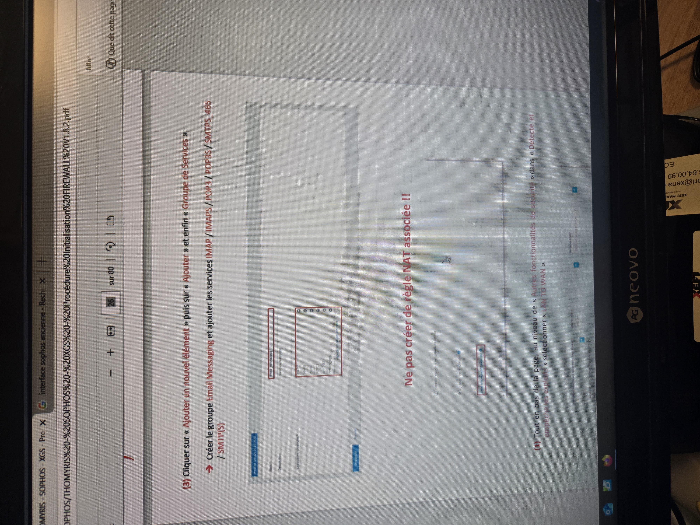
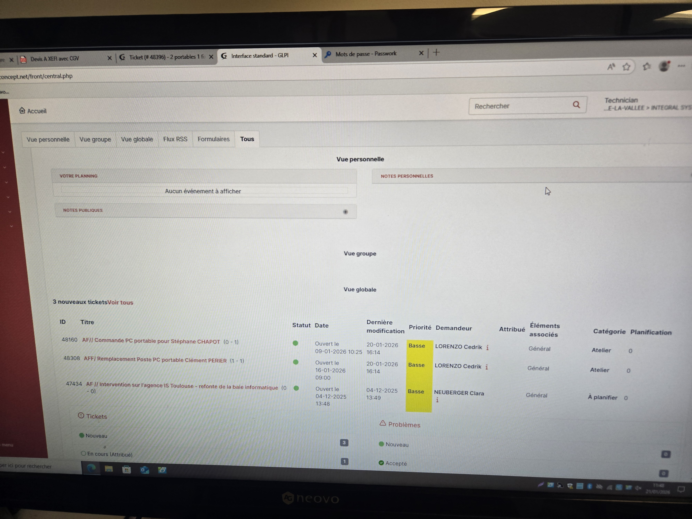

Durant cette période intensive, j'ai assuré le maintien en condition opérationnelle du parc informatique. Mes responsabilités couvraient le cycle complet : de la préparation des postes à l'accompagnement des utilisateurs via le Helpdesk GLPI, tout en garantissant la sécurité via Sophos.
Voici quelques illustrations des missions réalisées (déploiement matériel, rédaction de documentation et suivi des incidents).



Rythme : Temps plein (9h00 - 17h30) du 05/01 au 13/02.
| Activités hebdomadaires | 05/01 | 12/01 | 19/01 | 26/01 | 02/02 | 09/02 |
|---|---|---|---|---|---|---|
| Inventaire & Préparation de postes (Mastering) | ||||||
| Déploiement & Configuration Sophos Endpoint | ||||||
| Assistance Utilisateur N1 (Tickets GLPI) | ||||||
| Dépannage de proximité & Maintenance | ||||||
| Clôture des interventions & Documentation |